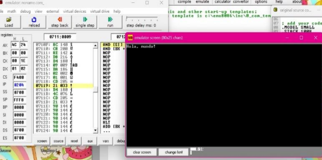
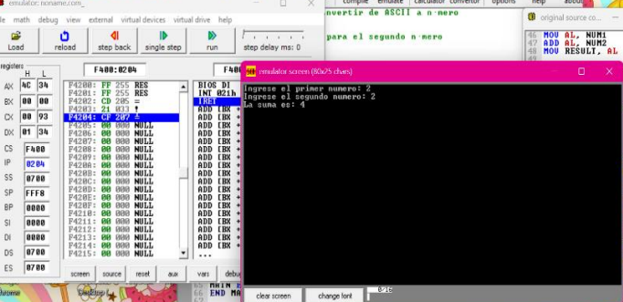
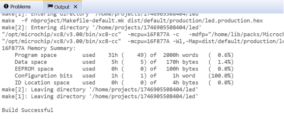
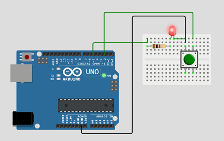

ADM
Arquitectura de maquinas - Contenido y material del curso
Practicas de la clase
Aqui encontraremos las practicas que se hicieron en la clase de arquitectura de maquinas usando lenguaje ensamblador y practicas en arduinos.
Primeros pasos en EMU8086!
Empezaremos con nuestros primeros pasos en el lenguaje ensamblador creando un programa que muestre un mensaje en pantalla utilizando interrupciones para manejar la salida. (hola mundo).
MODEL SMALL
.STACK 100H
.DATA
// MENSAJE DB 'Hola, mundo!$' ; Mensaje a mostrar, el "$" indica fin de cadena para INT 21H//
.CODE
MAIN PROC
MOV AX, @DATA
MOV DS, AX
MOV AH, 09H
LEA DX, MENSAJE
INT 21H
MOV AH, 4CH
INT 21H
MAIN ENDP
END MAIN

Seguiremos con un programa que pide dos números al usuario, los sume y luego imprima el resultado en pantalla.
.MODEL SMALL
.STACK 100H
.DATA
MSG1 DB 'Ingrese el primer numero: $'
MSG2 DB 0DH, 0AH, 'Ingrese el segundo numero: $'
MSG3 DB 0DH, 0AH, 'La suma es: $'
NUM1 DB ?
NUM2 DB ?
RESULT DB ?
.CODE
MAIN PROC
MOV AX, @DATA
MOV DS, AX
; Mostrar mensaje para el primer número
MOV AH, 09H
LEA DX, MSG1
INT 21H
; Leer el primer número
MOV AH, 01H
INT 21H
SUB AL, '0' ; Convertir de ASCII a número
MOV NUM1, AL
; Mostrar mensaje para el segundo número
MOV AH, 09H
LEA DX, MSG2
INT 21H
; Leer el segundo número
MOV AH, 01H
INT 21H
SUB AL, '0' ; Convertir de ASCII a número
MOV NUM2, AL
; Sumar los dos números
MOV AL, NUM1
ADD AL, NUM2
MOV RESULT, AL
; Mostrar mensaje del resultado
MOV AH, 09H
LEA DX, MSG3
INT 21H
; Convertir el resultado a ASCII y mostrarlo
ADD RESULT, '0'
MOV DL, RESULT
MOV AH, 02H
INT 21H
; Finalizar el programa
MOV AH, 4CH
INT 21H
MAIN ENDP
END MAIN

Para ver las practicas completas puedes descargar el pdf haciendo click en el siguiente boton!
Practicas en MPLAB!
Esta es una de las practicas usando el entorno MPLAB . Consiste en encender y apagar un LED cada vez que se presione un botón conectado a RB0. Usando interrupciones y/o consultando el estado del pin con BTFSS PORTB, 0.
#include xc.h
// CONFIG
#pragma config FOSC = XT // Oscillator Selection bits
#pragma config WDTE = OFF // Watchdog Timer Enable bit
#pragma config PWRTE = ON // Power-up Timer Enable bit
#pragma config CP = OFF // Code Protection bit
#define _XTAL_FREQ 4000000 // Frecuencia del oscilador (ajústala si es diferente)
void main(void) {
// Configurar RB0 como entrada, RB1 como salida
TRISB0 = 1; // Botón como entrada
TRISB1 = 0; // LED como salida
// Estado inicial del LED apagado
PORTBbits.RB1 = 0;
// Variable para guardar el estado del LED
char ledEncendido = 0;
while(1) {
// Verifica si el botón está presionado (RB0 en alto)
if (PORTBbits.RB0 == 1) {
__delay_ms(20); // Pequeño retardo para evitar rebote
if (PORTBbits.RB0 == 1) { // Confirmar que sigue presionado
ledEncendido = !ledEncendido; // Cambia el estado del LED
PORTBbits.RB1 = ledEncendido; // Aplica el nuevo estado
while (PORTBbits.RB0 == 1); // Esperar que se suelte el botón
__delay_ms(20); // Debounce adicional
}
}
}
}
La simulacion valida el funcionamiento del codigo dando el resultado esperado.

Siguiendo con las practicas de microprocesadores en MPLAB tenemos este ejercicio que consiste en encender y apagar un LED con retardo donde tenemos que controlar el parpadeo de un LED conectado al pin RC0.
#include xc.h
// CONFIGURACIÓN DE FUSES
#pragma config FOSC = XT // Oscilador XT
#pragma config WDTE = OFF // Watchdog Timer desactivado
#pragma config PWRTE = ON // Power-up Timer activado
#pragma config BOREN = ON // Brown-out Reset activado
#pragma config LVP = OFF // Programación baja tensión desactivada
#pragma config CPD = OFF // Protección EEPROM desactivada
#pragma config WRT = OFF // Escritura en memoria desactivada
#pragma config CP = OFF // Protección de código desactivada
#define _XTAL_FREQ 4000000 // Frecuencia del oscilador (4 MHz)
void main(void) {
TRISCbits.TRISC0 = 0; // Configura RC0 como salida
PORTCbits.RC0 = 0; // Inicialmente en bajo (LED apagado)
while (1) {
PORTCbits.RC0 = 1; // Enciende el LED
__delay_ms(500); // Espera 500 ms
PORTCbits.RC0 = 0; // Apaga el LED
__delay_ms(500); // Espera 500 ms
}
}
La simulacion valida el funcionamiento del codigo dando el resultado esperado.
Practica con simulador de arduino!
Una de nuestras practicas con arduinos consiste en encender y apagar un LED conectado a RA0 y que cada vez que se presiona un botón conectado a RB0 utilice interrupciones externas.
const int ledPin = 8; // Pin donde está conectado el LED (equivalente a RA0)
const int buttonPin = 2; // Pin donde está conectado el botón (INT0 en Arduino UNO)
volatile bool ledState = false;
void setup() {
pinMode(ledPin, OUTPUT);
pinMode(buttonPin, INPUT_PULLUP); // Botón con resistencia interna de pull-up
attachInterrupt(digitalPinToInterrupt(buttonPin), toggleLED, FALLING);
// Interrupción en flanco de bajada cuando se presiona el botón
}
void loop() {
// No es necesario poner nada aquí, ya que todo lo maneja la interrupción
}
void toggleLED() {
ledState = !ledState; // Cambia el estado
digitalWrite(ledPin, ledState);
}
En la imagen se observa cómo el LED se enciende tras detectar la pulsación del botón, tal como se programó en el código.
